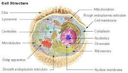

Overview: Biology explores living organisms and their vital processes.
Focus: Cell structure studies the parts of cells — like the nucleus, cytoplasm, and membrane — that keep organisms alive and functioning.
Cell structure determines how organisms grow, reproduce, and respond to their environment. Each organelle within a cell has a specialized function. Understanding cells is fundamental for studying genetics, disease, and biotechnology.
